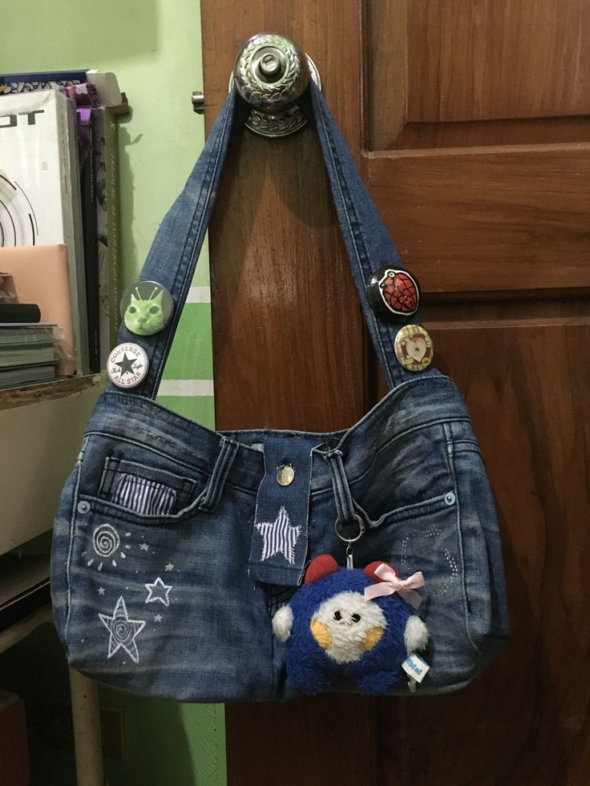

Produk Kami
penjelasan produk recycle dari barang bekas yang tidak terpakai
Tas dari Celana Jeans Bekas

Ulasan Produk
Tas dari celana jeans bekas merupakan produk kreatif yang memanfaatkan pakaian lama menjadi barang yang masih memiliki nilai guna. Celana jeans yang sudah tidak dipakai dapat dipotong dan dijahit kembali menjadi tas belanja, tas santai, atau tas untuk membawa perlengkapan sekolah. Bahan jeans cukup kuat dan dapat digunakan dalam waktu lama. Selain mengurangi limbah tekstil, produk ini juga dapat menghemat biaya dan memiliki nilai jual jika dibuat dengan desain yang menarik.
Alat
- Gunting kain
- Pensil kain atau kapur jahit
- Penggaris
- Jarum jahit
- Mesin jahit
Bahan
- Celana jeans bekas
- Benanh jahit
- Kain tambahan untuk lapisan dalam jika perlu
- Resleting atau kancing
- Tali tas atau potongan kain untuk pegangan
- Kancing hias atau aksesori tambahan
Langkah Kerja
- Siapkan celana jeans bekas yang masih cukup kuat dan bersih.
- Cuci dan keringkan celana jeans sebelum digunakan.
- Tentukan desain, ukuran, dan bentuk tas yang akan dibuat.
- Tandai bagian celana jeans yang akan dipotong menggunakan kapur jahit.
- Potong kain sesuai pola tas yang telah direncanakan.
- Jahit bagian bawah tas hingga tertutup dengan kuat.
- Buat pegangan menggunakan potongan kain jeans atau tali tas.
- Pasang pegangan pada bagian atas tas dengan jahitan yang kuat.
- Tambahkan resleting, kancing, atau saku sesuai kebutuhan.
- Rapikan jahitan dan tambahkan aksesori agar tas terlihat menarik.
- Periksa kekuatan tas sebelum digunakan.
Biaya Alat
- Gunting kain= Rp10.000
- Pensil kain atau kapur jahit= Rp3.000
- Penggaris= Rp3.000
- jarum jahit= Rp3.000
Total alat= Rp19.000
Biaya Bahan
- Celana jeans bekas= Rp0
- Benang jahit= Rp3.000
- Kain lapisan dalam= Rp8.000
- Resleting= Rp5.000
- Tali tas= Rp7.000
- Aksesori tambahan= Rp5.000
Total alat= Rp28.000
Harga Jual dan Laba
Biaya bahan per produk
= Rp28.000
Harga Jual
= Rp45.000
Laba per Produk
= Rp17.000